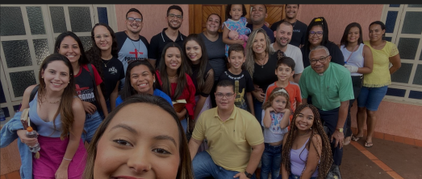
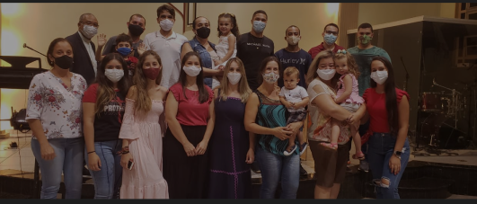
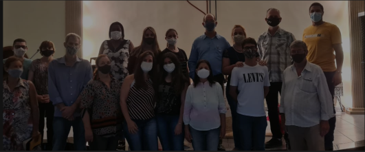
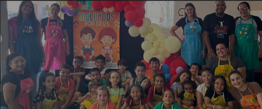

Bem-vindo à Igreja Metodista de Morro Agudo
A Igreja Metodista de Morro Agudo é uma comunidade cristã acolhedora e vibrante, comprometida com a fé em Jesus Cristo e com o serviço ao próximo. Situada no coração de Morro Agudo, nossa igreja se dedica a ser um lugar de encontro, adoração e crescimento espiritual.
Nossos Ministérios





Nossos Horários de
Culto de Adoração a Deus
-
Grupos Pequenos:
Terça às 19h30 -
Culto da Família:
Quarta às 19h30 -
Reunião de Oração:
Sexta às 19h30 -
Culto de Jovens e Juvenis:
Sábado às 19h30 -
Escola Bíblica Dominical:
Domingo às 09h -
Culto de Adoração:
Domingo às 19h
Conecte-se Conosco
Preencha Os Dados Do Formulário Abaixo Para Que
Possamos Entrar Em Contato Com Você!